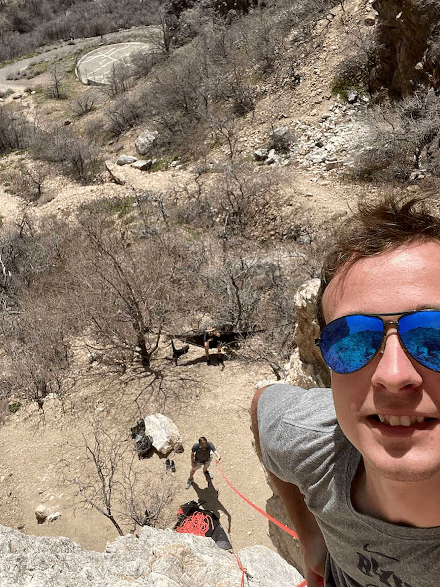

About Me
Hi, I’m Heath, the pilot and creative backbone behind SkyLensProvo. I’ve dreamed of flying since I was in the crib and now I get to combine that childhood dream with the art of storytelling.
Based in Provo, Utah, I'm here to help you capture your moment from above.

📷 Equipment & Expertise
- FAA Part 107 Certified Pilot – Professionally trained and fully compliant with all drone regulations.
- Nikon D3500 DSLR – 24 MP APS‑C sensor, ISO 100–25 600, 5 fps, Full HD 1080/60p video
- DJI Avata FPV Drone – 48 MP 1/1.7″ sensor, f/2.8 lens, ultra-wide 155° FOV, captures 4K/60fps and 2.7K/120fps video, max 18 min flight time
Our Mission
At SkyLensProvo, my mission is to elevate ordinary experiences into your own personal cinematic journeys. Every shoot is driven by creativity, safety, and a deep love of flight. Whether you’re a realtor, engaged couple, business owner, or adventure seeker, I aim to bring a fresh perspective—literally and figuratively—in every frame.